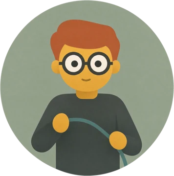
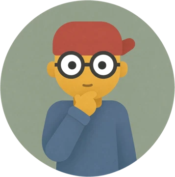
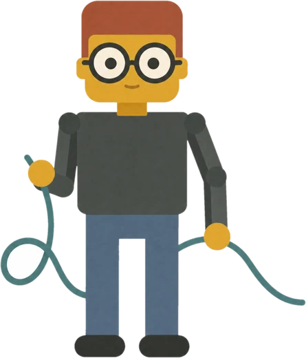
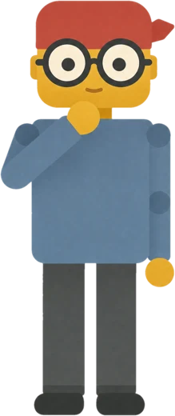
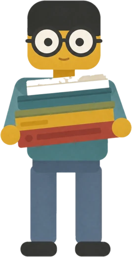
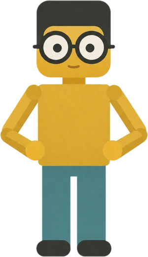
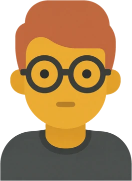
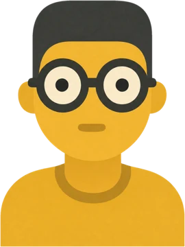
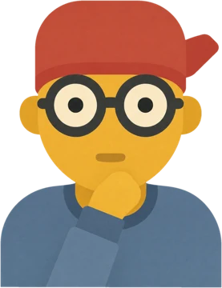

AI-powered insight through knowledge graphs
Inradium combines knowledge graphs with modern AI so your organisation can understand its data, not just store it.
Transforming complex data into actionable insights through AI, knowledge graphs and intelligent data solutions.
Inradium is an AI and knowledge graph company. It mines data from documents, feeds and databases, links it, and gives AI models something solid to think with.

Inradium combines knowledge graphs with modern AI so your organisation can understand its data, not just store it.
Your data becomes a live, linked view of your operations. AI models read that view and give deeper answers than they can from loose documents.

With data held as a graph, AI gives more accurate predictions and recommendations, and every answer can be traced back to its source.
Six ways Inradium turns raw data into intelligence your AI can use.
Relationships and hierarchies between concepts give your data meaning. AI understands context, not just keywords, and makes the right connections.
Connect your knowledge graph to the models you already use through simple APIs. Better grounding, better reasoning, less guesswork.
Trace any AI decision back to the facts behind it. Transparent knowledge paths give you accountability and trust.
The graph grows alongside your models, refining connections through feedback and pattern recognition.
Custom ontologies capture your industry's terms and relationships, so the AI speaks your language and understands your business.
Reasoning over the graph surfaces implicit connections and new insight, including the kind nobody wrote down.
Four steps. The same pipeline runs whether you have a thousand records or a few million a day.

Documents, news feeds, APIs, spreadsheets and databases come in as they are. Structured or messy, Inradium takes both.

An ontology describes what things are and how they relate. Plain English first, then the technical term: OWL.

Entities are resolved and linked into a knowledge graph. One person, one company, one product, however many sources mention them.

AI models query the graph and answer with the path they took. You get the insight and the evidence together.
Tell Inradium about your data and what you want to know from it. A short note is fine.



Prefer updates instead? Leave your email and Inradium will write when there is something worth saying.